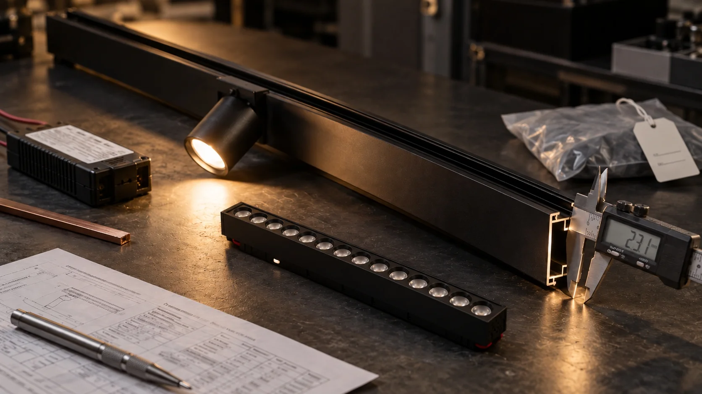
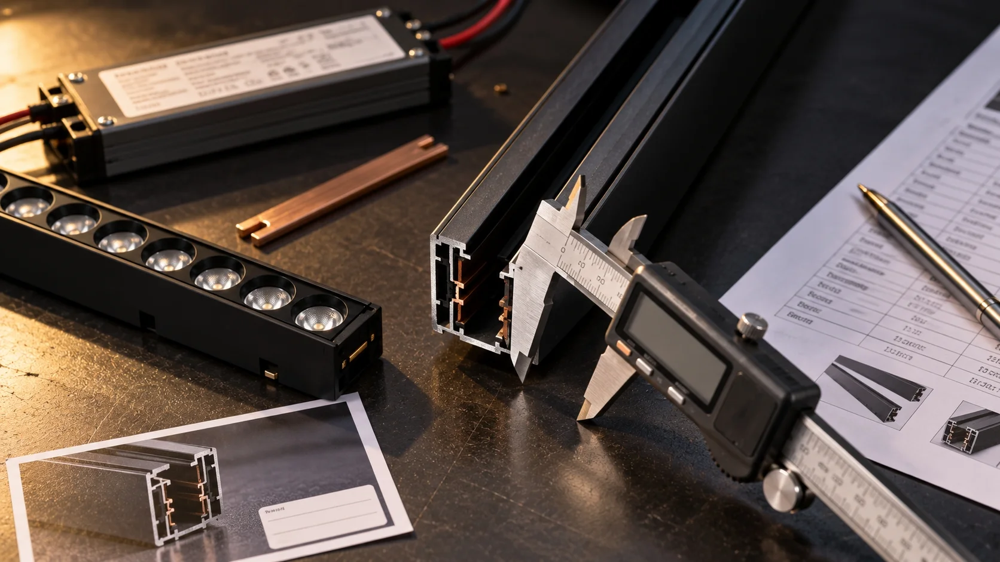
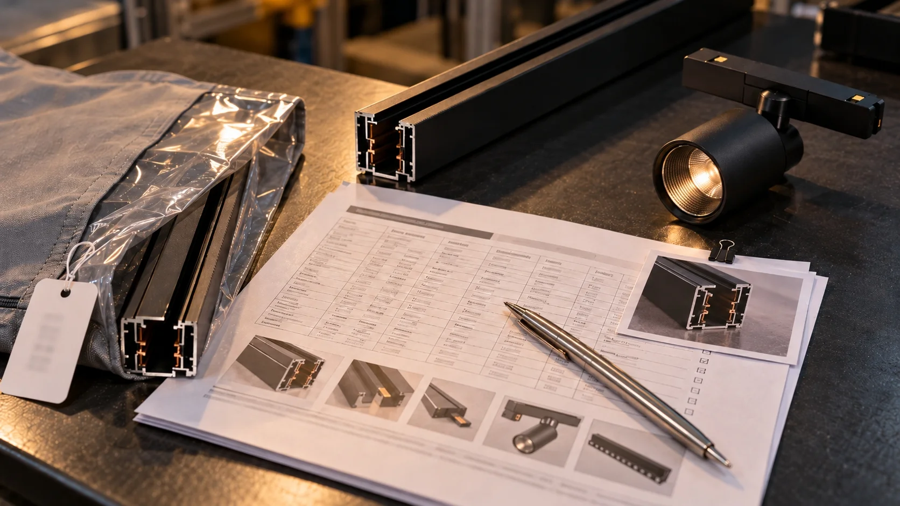

Your sample is on the desk. These three questions tell you whether the order controls exist.
| Ask your supplier | Answer that means HOLD | Answer that lets you proceed |
|---|---|---|
| 1. Where did this sample come from? | "It's our standard sample." | A batch number and a line — or, for a new model, written engineering-sample status plus a first-article commitment |
| 2. Will you keep one unit on each side, photograph it with the date, and lock the listed parameters into the order with a no-substitution clause? | "You can trust us." | Yes, in writing, with the parameter list attached to the order |
| 3. Will you tell us in writing if a batch deviates? | "We have 100% QC." | Yes — written notice before shipment |
Any one HOLD → do not place the production order yet. Get the missing commitment in writing first. If it is refused, walk away.
All three clear → complete Action 2 and any project-applicable advanced checks. Release only when the Hold, or Release table is clear.
The three questions secure the order terms; they do not replace checking that the physical unit matches the quotation.
Everything below is the detail behind those three questions. The three actions are the main line. The advanced module at the end is for the parameters your project actually depends on — skip it if your order is simple.
Two suppliers quoted. Both samples arrived. Both light up. Both look the same under your ceiling.
You have to sign off on one.
One example runs through this chapter. The caliper reads 1.18mm on the sample's profile wall. The quotation says 1.2mm. Is that a problem? By the end of this page you will know exactly what to write into the order so the answer is never left to opinion.
Three assumptions can lead to sample-approval failures when the production reference and written controls are incomplete.
| What buyers assume | What the sample actually proves |
|---|---|
| The sample passed, so production will pass | The supplier can build one unit under the conditions used for that sample |
| The sample looks good, so the process is stable | One unit may have received individual finishing or selection |
| The batch went wrong, so the supplier cut corners | No standard was ever agreed in writing |
The third row is the counter-intuitive one.
A batch-consistency failure is not always a supplier substituting materials on purpose. Many batch-consistency disputes arise because the production standard was not agreed in writing before release. A supplier builds a good sample, ships what the line produces, and both sides find out at the same time.
A sample can be used as a reference only when its parameters and production controls are documented.
A sample replicates. A standard controls.
✦ Where this sits in the series: sample approval is the third and final screen before release. Chapter 3 screens how a supplier responds. Chapter 2 tests whether they understand engineering. This chapter is the only one that looks at what they actually build — which is why it can overturn the other two.
✦ In plain terms: a unit built for the meeting is not the same as a unit built on the line. Find out which one you are holding.
| Sample source | What it tells you | Risk |
|---|---|---|
| Pulled from a running production batch | Represents the process that will make your order | ✅ Low |
| Built separately as an engineering sample | Shows design intent, not process capability | ⚠️ Medium |
| Kept as a display or exhibition sample | May be years old; finish and components can drift | 🚫 High |
Send this question, word for word:
Was this sample pulled from a production batch? If yes, state the batch and line. If no, confirm in writing when you will provide the line-produced first article or first-batch pull, before release.
| PASS | FAIL |
|---|---|
| The supplier names the batch and line and confirms the same process for your order — or states in writing that this is an engineering sample for a new model and commits to a line-produced first article before release. | "This is our standard sample" — no origin, no batch, no commitment. |
What a good answer sounds like:
✅ "This sample was pulled from batch B-2604 on line 2 (extrusion → anodising → assembly). Your order will run on the same line with the same fixture set. Sample build date: 06 Sep."
What a bad answer sounds like:
❌ "This is our best-quality standard sample. Please check it; our quality is good and many clients are satisfied."
Keep for your file: the supplier's signed source statement; for an engineering sample, the first-article record.
✦ In plain terms: open the sample and check it against what was written to you before you ever asked for a sample.
Between the first reply and the sample, a supplier makes a set of claims. The physical unit is where those claims can be checked.
| Claim made earlier | What to check on the physical unit |
|---|---|
| Conductor material | Cross-section and colour of the conductor strip |
| Contact plating | Colour and wear at the contact point |
| Fixing method | Screws present — or clips only |
| Driver | Label on the driver: model number and wattage |
| LED, CCT, CRI | Marking on the module, colour temperature, SDCM |
| Aluminium wall thickness | Measure at three agreed points with the stated method |
| Surface finish | Anodised or powder-coated; colour match between end cap and rail |
| Track-to-track joint | Gap and alignment where two rails meet |
The quotation says 1.2mm. The caliper says 1.18mm. Whether that 0.02mm difference is meaningful depends on the calibrated tool, contact point, surface condition and agreed measurement method. The measurement alone is not the decision.
The problem is that the quotation said "1.2mm" with no tolerance. A number with no tolerance cannot be checked and cannot be enforced. Two questions go back:
1. What is the permitted tolerance on the profile wall, measured at which points, by which method?
2. Will you confirm that figure in the parameter sheet that goes with this order?
Once that is answered, 1.18mm is either inside the agreed tolerance (release) or outside it (hold). Either way it stops being an opinion.
✦ A number to discuss, not a rule: for a straight extruded profile wall, ±0.1mm can be a starting point for discussion, not a default acceptance rule. The agreed figure depends on the profile, the nominal size and the measurement method — so agree it in the parameter sheet rather than assuming it.
| PASS | FAIL |
|---|---|
| Every parameter your order depends on has a value, unit, tolerance and verification method in writing, and the unit matches it — or the difference is approved in writing before release. | A required parameter has no value, unit, tolerance or method; the unit conflicts with the written figure; or a difference is not approved in writing. |
What a good answer sounds like:
✅ "Conductor is pure copper, 2.0 × 3.0mm section. Contact plating is gold over nickel. Driver label reads CV-100-48, 100W constant voltage. Wall thickness measures 1.18–1.22mm at three points; the permitted tolerance and measurement method will be stated in the parameter sheet. Batch sheet attached."
What a bad answer sounds like:
❌ "This is our standard quality. The copper and driver are good quality, and we inspect the thickness before shipping."
Send back: photographs of the sample at these eight points, each one placed next to the written claim it checks.
Keep for your file: the signed parameter sheet, the measurement record, and a dated photo of each checked point.

✦ In plain terms: an approved sample on its own is a reference, not an order requirement. Write the relevant parameters and controls into the order so it can be compared with later production.
Four things go into the order:
| What | Why |
|---|---|
| A retained unit held on both sides | A physical reference if a dispute arises |
| Dated photographs of that unit | A sample cannot be couriered back for every batch |
| A locked parameter list with a no-substitution clause | Turns "it looks the same" into a list that can be checked |
| A written deviation-notification duty | Gives you time to react before shipment |
Copy this request:
Before we confirm the production order, please confirm in writing:
1. You will retain one unit from this sample, labelled with our company name and the sample date, for the period we agree in the order.
2. You will send us dated photographs of that retained unit.
3. You will attach a locked parameter list to this order covering at least the following: aluminium alloy and wall thickness, conductor material, driver make and model, LED platform with CCT and SDCM, surface finish, and critical fit dimensions — plus any project-specific parameters this order requires. No substitution of these items without our written approval.
4. You will notify us in writing if a batch deviates from the retained sample, before shipment.
The locked parameter list — a project-specific starting set:
Add any project-specific requirements, including track-system voltage/pole configuration and module compatibility, dimming/control protocol, emergency function, and IP or installation requirements where applicable.
You are not asking for a full BOM. The categories above are a practical starting set that makes a change to a listed parameter visible for written approval; add the project-specific parameters needed for your order.
Retention period matters as much as the sample. A retained unit gives both sides a physical reference for the period it is retained. Agree that period in the order — ideally covering the expected repeat-order period — so a later unit can be compared against the agreed reference if a locked parameter is questioned.
| PASS | FAIL |
|---|---|
| The order carries, in writing, all four commitments above — a retained unit held on both sides, dated photographs of that unit, a project-specific locked parameter list carrying the no-substitution clause, and the written deviation-notification duty. | Any one of those four is absent from the order, or the supplier offers a verbal assurance in place of it. |
What a good answer sounds like:
✅ "Confirmed. We will retain one unit from this sample, labelled with your company name and the date, for the agreed period. We will send dated photographs of that unit and attach the locked parameter list to your order. No substitution without your written approval, and we will notify you in writing before shipping if a batch deviates."
What a bad answer sounds like:
❌ "Yes, we can keep one sample for you. No problem. For the BOM — this is our internal document, we cannot send. But you can trust us, we will not change anything."
Keep for your file: the signed retained-sample confirmation, the dated photographs of the retained unit, and the order version carrying the project-specific locked parameter list and the no-substitution clause.

A failure is not counted against passes elsewhere. It is handled by its class.
| Class | Applies to | What a failure means |
|---|---|---|
| 🛑 Hard Stop | Action 1 sample source · Action 3 sample → standard | Hold. Do not sign the production order. Request the missing standard and recheck it. Refused → Switch. |
| 🏆 Quality Proof | Action 2 unit vs quotation · the advanced module | Hold. Request the specified, project-applicable evidence. Still missing, unsuitable or conflicting after the agreed correction date → Switch. |
| 💼 Commercial Filter | The order terms in Action 3 | Hold release or shipment. Write the required terms into the order; a general QC assurance is not a substitute. |
| Situation | Your action |
|---|---|
| Any Hard Stop is not satisfied | Hold. Request the missing standard and recheck it. If refused, Switch. |
| An applicable quality record is missing, or conflicts with the unit or the locked parameter list | Hold. Request the specified evidence. If it stays missing or conflicting after correction, Switch. |
| Source and standard pass, but the order terms are incomplete | Hold release. Add the written terms; do not substitute a verbal assurance. |
| All applicable evidence is retained and all required terms are locked in the order | Sign the retained sample, send dated photographs of that unit, attach the locked parameter list with the no-substitution clause, confirm the deviation terms, then Release. |
The measurement was never the problem. What decides it is whether three things exist in writing.
| Situation | With the documents | Without them |
|---|---|---|
| 1.18mm against a stated 1.2mm plus an agreed tolerance | Inside tolerance → release. Outside → hold, rework, or written acceptance. | "It's basically the same" — a difference you may not be able to resolve later. |
| A later batch that measures 1.15mm | Compared against the retained unit and the agreed tolerance. | Found by your customer after installation. |
The sample is evidence. The documents written at sample approval are what make it enforceable.
Skip this if your order is simple. Read the rows your project actually depends on.
| What the sample cannot show | Why | What to request instead |
|---|---|---|
| Batch-to-batch consistency | One unit says nothing about the spread across the order | The incoming, in-process and final inspection points; recorded parameter at each point; sample size; and deviation-authorisation record |
| Colour tolerance across units | A single module can be hand-selected from the best bin | LED manufacturer/platform, nominal CCT, permitted CCT range, SDCM bin, and the bin code released for this order |
| Ageing and lumen maintenance | Lumen depreciation is not visible on a bench | A test record for the same LED platform: duration, drive current, ambient or case temperature, lumen-maintenance result and report date |
| Thermal behaviour | Depends on the fixture, the driver and the installation | Housing case temperature at a named point after a stated stabilisation time, with ambient, mounting condition, driver model and input condition; plus the driver derating curve |
| Finish durability | Corrosion and UV exposure take months to appear | For coastal or corrosive sites: coating system, test method, agreed exposure duration and pass criterion; otherwise mark this item project input required |
A bench check tells you whether the unit lights up. It does not tell you where the LEDs will be at hour 3,000. Thermal conditions can materially affect lumen maintenance and driver life, while the sample in front of you shows its light output, not its operating temperature.
| PASS | FAIL |
|---|---|
| For every limitation that applies to your project, the supplier provides the named record. Limitations that do not apply are marked with the project condition that makes them non-applicable. | A required record is missing, is for a different LED platform or product configuration, conflicts with the locked parameter list, or the supplier cannot say whether the limitation applies. |
Ask this: "What can this sample not prove for this project, and which record covers each gap?"
✦ In plain terms: the standard tells you how to sample a batch. It does not tell you what counts as acceptable for your order. You and the supplier have to name those numbers, and write them into the order.
ISO 2859-1 provides AQL-indexed sampling schemes; it does not select the AQL, defect class or acceptance number for your order. State in the order the standard and edition, lot definition, inspection level, sampling scheme, agreed AQL or other rule, named critical/major/minor items, and the acceptance/rejection numbers. Choose those values for the project risk and agreed controls. For safety- or compatibility-critical items, state whether the order requires 100% verification or a named zero-acceptance plan instead of relying on a general AQL statement.
| PASS | FAIL |
|---|---|
| The order states the inspection standard and edition, lot definition, inspection level, sampling scheme, the agreed AQL or other rule, named critical/major/minor items, the acceptance and rejection numbers, and the pre-shipment written-notice trigger. | Any one of those fields is missing from the order, or the supplier offers only a general assurance such as "we will do our best." |
✅ "For this order, the agreed inspection plan is [standard and edition], [inspection level], [lot definition], AQL [value] for named major/minor items, with [100% verification or named zero-acceptance plan] for the listed critical items. If a batch deviates, we notify you in writing with photographs before shipment."
❌ "We have 100% QC. All goods checked before shipping. If any problem, we will solve for you."
| Term | What to agree in writing | Why it matters |
|---|---|---|
| Critical vs cosmetic | Which items may never deviate | Stops a cosmetic tolerance being used to justify a functional change |
| Deviation handling | Rework, replacement, or your written acceptance before shipment | Determines your remedy if it goes wrong |
| Notification duty | Written notice to you when a batch deviates | Gives you time to decide on rework, replacement or acceptance before shipment |
| IF | THEN |
|---|---|
| The supplier cannot identify the sample source and will not commit to a production reference before release | Treat the sample as a design mock-up, not a production reference |
| A written claim does not survive the physical unit | Treat that claim as unverified until the parameter sheet is reissued and the unit is rechecked |
| The supplier claims the sample is exactly what you will receive, but cannot describe a batch-control measure | Treat batch control as unverified; do not release until the record is provided |
| The supplier will not retain a sample on both sides, provide dated photographs of that unit, or attach a locked list carrying the no-substitution clause | Do not release production |
| The supplier will not commit in writing to notifying you when a batch deviates | Do not release or ship until the notification duty is written into the order |
| After | Keep in your file |
|---|---|
| Action 1 — sample source | The supplier's signed source statement; for an engineering sample, the first-article or first-batch record |
| Action 2 — unit vs quotation | The signed parameter sheet, the measurement record, and a dated photograph of each checked point |
| Action 3 — order standard | The signed retained-sample confirmation, the dated photographs of the retained unit, and the order version carrying the project-specific locked parameter list and the no-substitution clause |
| Advanced module | The project-condition note and every applicable batch-control, colour, ageing, thermal or finish record |
| Inspection plan | The signed order version containing the inspection plan, acceptance criteria and notification duty |
A sample proves what a supplier can build under the conditions used for that unit. A retained sample, locked parameter list and batch controls make the production requirement checkable.
One action: attach four things to your next production order — a retained sample held on both sides, dated photographs of that unit, a project-specific locked parameter list carrying the no-substitution clause, and a written deviation-notification clause. Everything else on this page is a way of checking whether those four exist.
Send (1) one photo of the driver label and track joint, (2) the quoted parameter sheet or PO line, and (3) the project context: installation type, target CCT/CRI, order quantity or repeat-order expectation, and any coastal, dimming or emergency requirement. We will return a gap list showing which parameters still need to be locked before release.
The inspection references in this chapter are planning prompts, not a specification for any individual order. Your supplier's actual parameters, tolerances, test conditions and acceptance criteria must be stated in writing on the order.